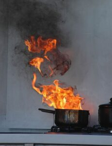

Después de un incendio en su hogar, puede invertir muchas horas limpiando las manchas y asegurándose de que todos los elementos destruidos se hayan eliminado de manera segura.
La operación de limpieza después de un incendio es un ejercicio que destruye el alma que implica tener que tirar algunos de sus tesoros e incluso hacer más daño en el proceso de Limpieza Post Incendio
Los profesionales dejarán su casa impecablemente limpia y luciendo maravillosa, pero intentar limpiar sin su ayuda puede dejarlo exhausto y no exactamente satisfecho con los resultados.

Días después de que haya terminado de limpiar el incendio, el penetrante olor a humo puede aparecer una vez más, lo que lo descorazona y lo enfurece por tener que comenzar de nuevo.
El motivo de la reaparición del olor es que el humo invade la abertura más pequeña y permanece allí obstinadamente hasta que se elimina. A menudo, el humo se ha infiltrado en las grietas de las paredes detrás de las unidades de la cocina y, no importa cuánto frote, el olor permanece.
La única respuesta a esta solución es la limpieza profesional con aparatos de "nebulización" para eliminar el olor.
Cuando el fuego envuelve un área, generalmente se trae agua para hacer frente al incendio y, como resultado, es posible que tenga que hacer frente a los efectos del agua y la humedad, así como del fuego y el humo.
En el caso de la humedad, un buen deshumidificador hará milagros, especialmente en un área donde se haya empapado recientemente papel tapiz lavable. Asegúrese de vaciar el recipiente del deshumidificador con regularidad y dejarlo funcionando hasta que se haya eliminado toda la humedad. Un ventilador en un ajuste alto también secará los artículos húmedos.
Para las telas delicadas que no se pueden fregar, una solución suave de agua y bicarbonato de sodio eliminará los olores desagradables y una buena ventilación al aire libre ayudará a desodorizar el material.
Existen ciertos productos químicos utilizados por las empresas de limpieza Post Incendio profesionales que contrarrestan los olores del humo y desodorizan un área antes de limpiarla.
Para daños extensos por humo, probablemente sea una buena idea contratar a profesionales para al menos desodorizar antes de abordar la limpieza usted mismo con TSP ((limpiador de fosfato trisódico) u otros agentes de limpieza patentados.
Se pueden emplear varios métodos para eliminar el olor después de un incendio y algunos optan por el tratamiento con cristales, donde los cristales se colocan en toda la casa y absorben el olor. Sin embargo, sin duda el método más eficaz es la limpieza del ozono, que elimina los efectos del humo, incluido el olor, de forma completa y permanente.
Cuando las pertenencias se han empapado a fondo, es imperativo que el daño se aborde con urgencia para evitar la aparición de moho y hongos, que pueden ser un problema peor de abordar.
Encuentre el mejor servicio de Limpieza de incendios en nano-nex.es